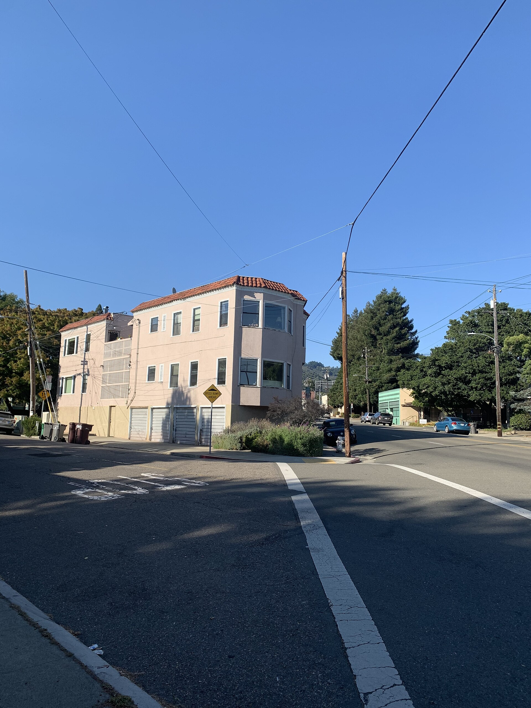
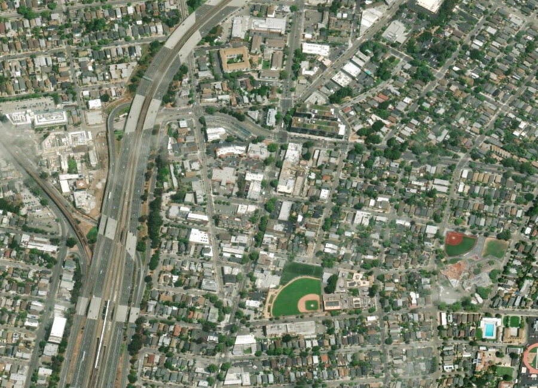
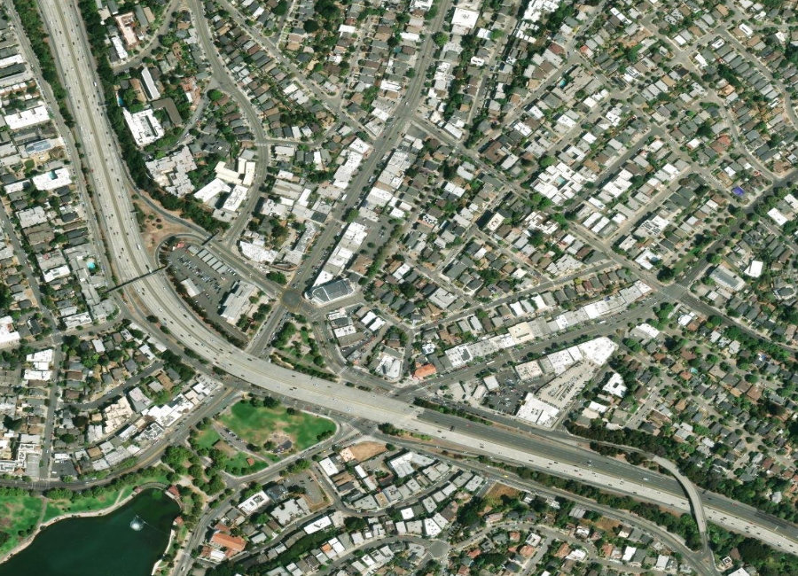
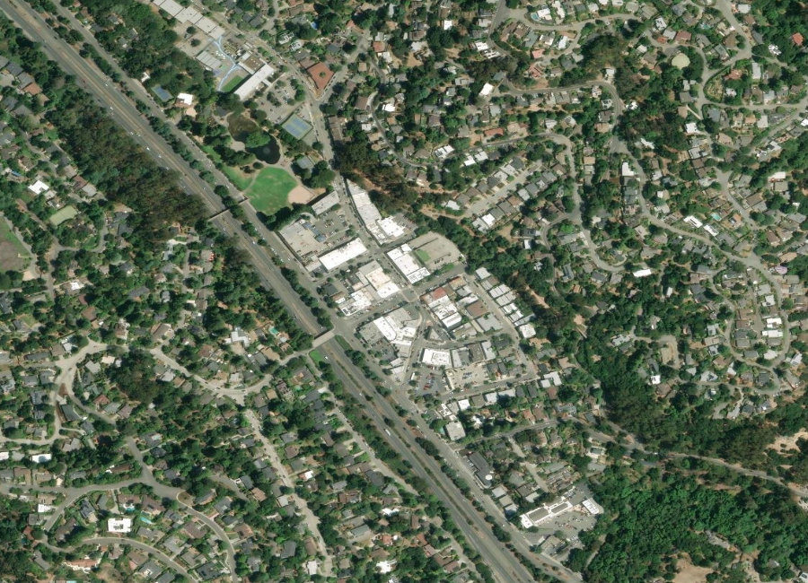

Alameda County · The East Bay
Home to more than 50 distinct neighborhoods, Oakland is a city of real contrasts — a Craftsman bungalow in Rockridge can sell for well over $2 million while a comparable home in Fruitvale goes for a fraction of that. Below you'll find current homes for sale and real estate listings in Oakland, updated throughout the day, whether you're buying your first East Bay home or preparing to sell into today's market.
If you'd like more information on any of these Oakland listings, just reach out — we're happy to share disclosures, recent nearby sales, and pricing history, and to walk you through anything you're curious about.
And for your convenience, feel free to register for a free account to receive alerts whenever new Oakland listings hit the market that match your criteria.
Source: Compass Market Insights, single-family homes in Oakland, July 2026 — 195 closed sales. Updated 20 August 2026. The citywide median blends dozens of vastly different submarkets, from ~$545K in Fruitvale to $2M+ in Rockridge.
About the Community
Oakland incorporated in 1852, taking its name from the oak forests ("Encinal" in Spanish) that once covered the area. The Port of Oakland remains the busiest port in Northern California, and Lake Merritt, near downtown, was designated the country's first official wildlife refuge in 1870. The city spans everything from dense flatland neighborhoods to the wooded, view-oriented Oakland Hills.
Why People Love It Here
Explore the Area

Craftsman bungalows, BART access

Walkable, dining-forward

Lake Merritt-adjacent, historic homes

Oakland Hills, wooded, view lots
Schools
Oakland Unified School District serves the entire city, with school quality and assignment varying significantly by neighborhood, alongside a range of respected private options.
History
Oakland's name traces back to the Spanish "Encinal," a reference to the extensive oak forests that once covered the area, part of a rancho grant to Luis María Peralta. Three developers began building downtown Oakland in 1851, and the state legislature incorporated the city on May 4, 1852.
The 1869 completion of the Central Pacific Railroad's western terminus, and the city's role absorbing refugees after the 1906 San Francisco earthquake, cemented Oakland's growth as a major port and industrial center — a role that continues today through the Port of Oakland, the busiest in Northern California.
The Chen Team in Oakland
We've helped families buy and sell across Oakland's most sought-after streets. When you work with us, you get second-generation local knowledge and Compass's full resources.
// Replace with your verified production figures
Market Trends
Median sold price by area, single-family homes, Q2 2026. Bars are drawn to scale from zero; hover a bar for the figure and sale count. This shows real neighborhood-level spread rather than a single citywide trend — Rockridge's median runs more than three times East Oakland's.
Available Now
Image credits: Rockridge, Oakland, CA-1.jpg by CarmenEsparzaAmoux — CC BY-SA 4.0, via Wikimedia Commons; Oakland California aerial view.jpg by Robert Campbell — CC BY-SA 3.0, via Wikimedia Commons.
{kind=link}
{kind=link}